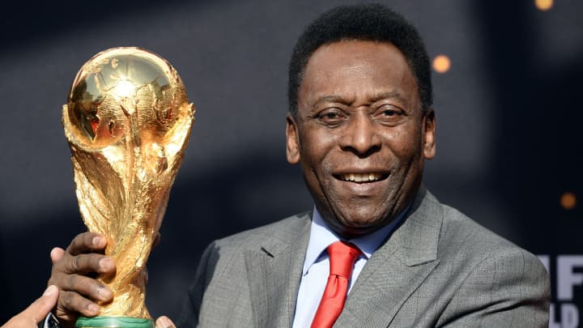
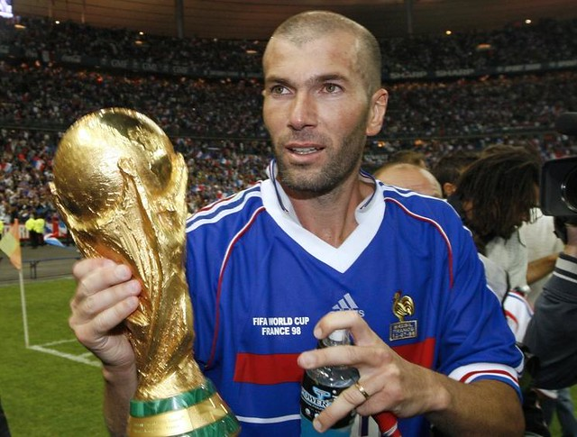

<!DOCTYPE html>
<html lang="en">

<head>
    <meta charset="UTF-8">
    <meta name="viewport" content="width=device-width, initial-scale=1.0">
    <title><html lang="en">
    <head>
        <meta charset="UTF-8">
        <meta name="viewport" content="width=, initial-scale=1.0">
        <title>FIFA WORLD Cup</title>
        <link rel="stylesheet" href="./style.css" >
    </head>
    <body>

    </body>
    </html></title>
</head>
<body>
            <div class="main" >
            <div class="nav">
            <div class="icon">
               </div>
             </div>
           </div>
           <h1 class="logo">FIFA WORLD CUP </h1>

<div class="menu">
    <ul>
        <li><a href="">HOME</a></li>
        <li><a href="">ABOUT</a></li>
        <li><a href="">SERVICE</a></li>
        <li><a href="">CONATCT</a></li>
    </ul>
</div>
<div class="search">
    <input class="srch" type="search" name="" placeholder="type to text">
    <a href="#"><button class="btn">search</button></a>
</div>
    


<div>
 <h3><a href="./finals.html">World Cup Football Winners List</a></h3>


<div class="content">
    The World Cup, often referred to as the FIFA World Cup, is an international association football competition contested by the senior men's national teams of the members of the Fédération Internationale de Football Association (FIFA), the sport's global governing body. The tournament has been held every four years since the inaugural tournament in 1930, except in 1942 and 1946 when it was not held because of the Second World Warh</p>
</div>
    <ol>
    <li><a href="https://www.roadtrips.com/luxury-travel-guides/world-cup-ultimate-guide/"> FIFA World Cup: The Ultimate Guide</a></li>
    <li>Exploring the FIFA World Cup: History, Teams, and Legends</li>
    <Li>Inside the FIFA World Cup: Everything You Need to Know</Li>
    <Li>All About the FIFA World Cup: Facts, Figures, and Highlights</Li>

</ol>
<h2>The most popular player in FIFA World Cup history : </h2>
    <h3><a href="https://fr.wikipedia.org/wiki/Pel%C3%A9">Pelé (Brazil):</a></h3>
    <h4>Widely regarded as one of the greatest footballers of all time, Pelé won the FIFA World Cup three times with Brazil in 1958, 1962, and 1970. His skill, charisma, and impact on the game have made him an enduring figure in football history.</h4>
    
<h3> <a  href="https://fr.wikipedia.org/wiki/Diego_Maradona"  >Diego Maradona (Argentina):</a> :
<h4>Maradona's performances in the 1986 World Cup, particularly his "Hand of God" and "Goal of the Century" goals against England, cemented his status as a legendary figure in football. He led Argentina to victory in the tournament, capturing the imagination of fans worldwide.</h4>
</h3>

<h3><a href="https://fr.wikipedia.org/wiki/Zin%C3%A9dine_Zidane"> zidane (france):</a> </h3>
<h4>Zidane's performances in the 1998 and 2006 World Cups, especially in the final matches, earned him widespread acclaim. His skill, elegance, and leadership on the field have made him an iconic figure in both French and global football.</h4>

</h3>
<h5>These are just a few examples, and opinions on the most popular player can vary widely among football fans. Each player mentioned has left an indelible mark on the FIFA World Cup and continues to inspire generations of football enthusiasts.</h5>
</div>
</body>

</htm